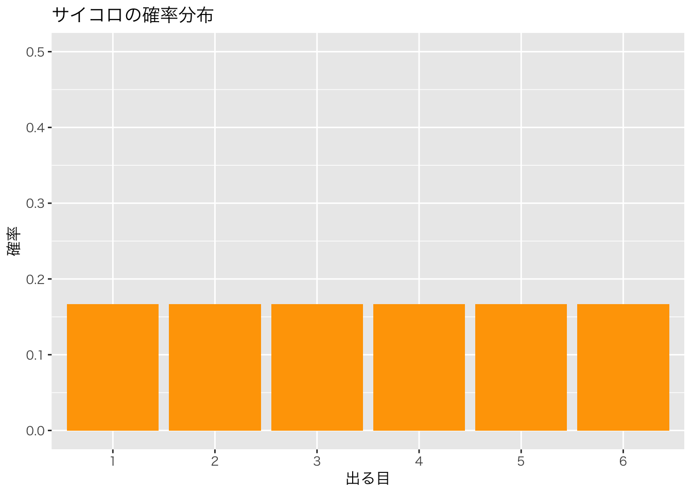
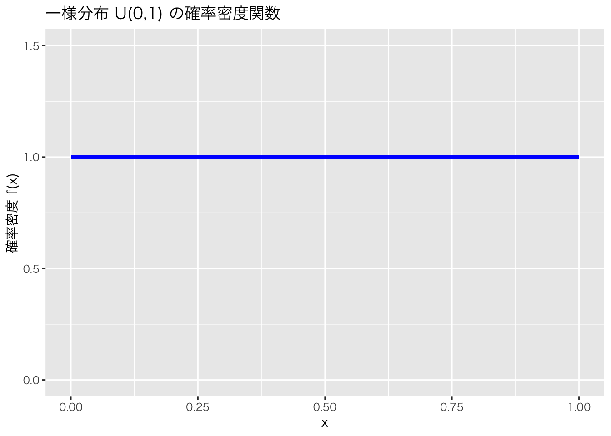

# 1の目が出る確率
1 / 6
#> [1] 0.1666667
# 偶数の目が出る確率
3 / 6
#> [1] 0.5第5回 確率論の基礎

今回の目標
- 確率変数、確率分布の意味を理解する。
- 期待値と分散の定義と意味を理解する。
- Rを使って期待値を計算してみる。
なぜ確率を学ぶのか
統計学は「不確実性」を扱う学問です。サンプルから母集団を推測するとき、そこには常に不確実性があります。この不確実性を数学的に扱うために、確率論の知識が必要です。
確率の基本
確率の定義
確率とは、ある事象が起こる可能性を0から1の間の数値で表したものです。
- 確率 = 0: 絶対に起こらない
- 確率 = 1: 必ず起こる
- 確率 = 0.5: 半々の可能性
確率の計算
公正なサイコロを1回振ったとき、特定の目が出る確率：
確率変数と確率分布
- 確率変数 (Random Variable): サイコロの目やコインの裏表のように、とる値が確率的に決まる変数のこと。通常 \(X\) や \(Y\) などの大文字で表します。
- 確率分布 (Probability Distribution): 確率変数がどのような値をどのような確率でとるかを表したものです。
離散型と連続型
- 離散型確率変数: とりうる値が飛び飛び（例：サイコロの目、コインの裏表）
- 連続型確率変数: とりうる値が連続的（例：身長、気温）
例：サイコロ
サイコロを1回振ったときの出る目を \(X\) とすると、\(X\) は \(\{1, 2, 3, 4, 5, 6\}\) のいずれかの値をとります。 それぞれの目が出る確率は \(1/6\) です。
Rで表してみましょう。
x <- 1:6
prob <- rep(1/6, 6) # 1/6 を 6回繰り返す
data.frame(x, prob)これをグラフ（確率分布図）にしてみましょう。
library(tidyverse)
theme_set(theme_gray(base_family = "HiraKakuProN-W3"))
df <- data.frame(x = factor(x), prob = prob)
ggplot(df, aes(x = x, y = prob)) +
geom_col(fill = "orange") +
ylim(0, 0.5) +
labs(title = "サイコロの確率分布", x = "出る目", y = "確率")
期待値 (Expected Value)
確率変数の「平均的な値」のことです。\(E[X]\) と書きます。 とりうる値に、その確率を掛けて足し合わせることで計算できます。
\[ E[X] = \sum x_i P(X=x_i) \]
サイコロの期待値を計算してみましょう。
3.5 という結果になります。サイコロの目は整数ですが、平均すると3.5になるという意味です。
Rで計算してみましょう。
# 期待値の計算
E_X <- sum(x * prob)
E_X
#> [1] 3.5期待値の性質
期待値には以下のような便利な性質があります。
- 定数を足す: \(E[X + c] = E[X] + c\)
- 定数を掛ける: \(E[cX] = c \cdot E[X]\)
- 線形性: \(E[aX + bY] = aE[X] + bE[Y]\)
分散 (Variance)
確率変数の「ばらつき」を表す指標です。\(V[X]\) と書きます。 「（値 - 期待値）の2乗」の期待値として定義されます。
\[ V[X] = E[(X - E[X])^2] = \sum (x_i - E[X])^2 P(X=x_i) \]
サイコロの分散を計算してみましょう。
# 分散の計算
V_X <- sum((x - E_X)^2 * prob)
V_X
#> [1] 2.916667
# 標準偏差
sqrt(V_X)
#> [1] 1.707825分散の性質
分散には以下のような便利な性質があります。
- 定数を足す: \(V[X + c] = V[X]\)（定数を足しても分散は変わらない）
- 定数を掛ける: \(V[cX] = c^2 \cdot V[X]\)
- 別の計算式: \(V[X] = E[X^2] - (E[X])^2\)
# 別の計算式で確認
E_X2 <- sum(x^2 * prob) # E[X^2]
E_X2 - E_X^2 # V[X] = E[X^2] - (E[X])^2
#> [1] 2.916667同時確率と条件付き確率
同時確率
2つの事象が同時に起こる確率を同時確率といいます。
例：2つのサイコロを振って、両方とも6が出る確率
# 両方6が出る確率
(1/6) * (1/6)
#> [1] 0.02777778条件付き確率
ある事象が起こったという条件のもとで、別の事象が起こる確率を条件付き確率といいます。
\[P(A|B) = \frac{P(A \cap B)}{P(B)}\]
独立性
事象 \(A\) と \(B\) が独立であるとは：
\[P(A \cap B) = P(A) \times P(B)\]
が成り立つことをいいます。サイコロを2回振る場合、1回目の結果と2回目の結果は独立です。
課題
- コインを1回投げて、表が出たら 100円、裏が出たら 0円もらえるギャンブルがあります。 表が出る確率を 0.5、裏が出る確率を 0.5 とするとき、もらえる金額の期待値を計算してください。
- もし表が出る確率が 0.1、裏が出る確率が 0.9 だったら、期待値はどうなりますか？
練習問題
練習1: サイコロの問題
- 2つのサイコロを振ったとき、目の合計が7になる確率を計算してください
- 目の合計の期待値を計算してください
練習2: 宝くじの期待値
1等（100万円）が当たる確率が 1/10000、2等（10万円）が当たる確率が 1/1000、ハズレ（0円）がそれ以外の宝くじがあります。この宝くじの期待値を計算してください。
練習3: ギャンブルの期待値
コインを3回投げて、表が出た回数 × 100円がもらえるゲームがあります。 1. とりうる値（0円、100円、200円、300円）それぞれの確率を計算してください 2. 期待値を計算してください
確率の公式まとめ
| 公式 | 説明 |
|---|---|
| \(P(A \cup B) = P(A) + P(B) - P(A \cap B)\) | 加法定理 |
| \(P(A \cap B) = P(A) \times P(B\|A)\) | 乗法定理 |
| \(P(A\|B) = \frac{P(A \cap B)}{P(B)}\) | 条件付き確率 |
| \(E[X] = \sum x_i P(X=x_i)\) | 期待値 |
| \(V[X] = E[(X-E[X])^2]\) | 分散 |
連続確率変数
これまで見てきたサイコロやコインのような離散型確率変数とは異なり、連続型確率変数は連続的な値をとる確率変数です。 例えば、身長、体重、気温、株価などがこれにあたります。
離散型と連続型の違い
離散型確率変数: - とりうる値が飛び飛び（例：サイコロの目 1, 2, 3, 4, 5, 6） - 確率は \(P(X = x)\) で表される - 確率の合計は1: \(\sum P(X=x_i) = 1\)
連続型確率変数: - とりうる値が連続的（例：身長 170.5cm, 170.51cm, …） - 特定の値をとる確率は0: \(P(X = x) = 0\) - 代わりに、ある範囲に入る確率を考える: \(P(a \leq X \leq b)\)
確率密度関数 (Probability Density Function)
連続型確率変数の分布は、確率密度関数 \(f(x)\) で表されます。 確率密度関数には以下の性質があります：
- \(f(x) \geq 0\) （常に0以上）
- \(\int_{-\infty}^{\infty} f(x) dx = 1\) （全体の面積が1）
- \(P(a \leq X \leq b) = \int_a^b f(x) dx\) （範囲 \([a, b]\) に入る確率は、その区間の面積）
連続型確率変数の期待値と分散
期待値（離散型の \(\sum\) が \(\int\) に変わる）: \[E[X] = \int_{-\infty}^{\infty} x f(x) dx\]
分散: \[V[X] = E[(X - E[X])^2] = \int_{-\infty}^{\infty} (x - E[X])^2 f(x) dx\]
または: \[V[X] = E[X^2] - (E[X])^2\]
離散型との比較
| 性質 | 離散型確率変数 | 連続型確率変数 |
|---|---|---|
| 確率の表し方 | \(P(X = x)\) | 確率密度 \(f(x)\) |
| 期待値 | \(E[X] = \sum x_i P(X=x_i)\) | \(E[X] = \int x f(x) dx\) |
| 分散 | \(V[X] = \sum (x_i - E[X])^2 P(X=x_i)\) | \(V[X] = \int (x - E[X])^2 f(x) dx\) |
| 確率の計算 | 足し算 \(\sum\) | 積分 \(\int\) |
| 全確率 | \(\sum P(X=x_i) = 1\) | \(\int f(x) dx = 1\) |
連続型確率変数の例：一様分布
最も単純な連続型確率分布は一様分布です。 0から1の間で、どの値も等しい確率（密度）で現れる分布です。
# 一様分布の確率密度関数を可視化
x <- seq(0, 1, length.out = 100)
f_x <- dunif(x, min = 0, max = 1) # 一様分布の密度関数
df <- data.frame(x, f_x)
ggplot(df, aes(x = x, y = f_x)) +
theme_gray(base_family = "HiraKakuProN-W3") +
geom_line(color = "blue", size = 1.5) +
ylim(0, 1.5) +
labs(title = "一様分布 U(0,1) の確率密度関数",
x = "x", y = "確率密度 f(x)")
一様分布 \(U(0, 1)\) の期待値と分散：
# 一様分布の期待値（理論値は 0.5）
# E[X] = ∫ x*f(x)dx = ∫₀¹ x*1 dx = 0.5
# 一様分布の分散（理論値は 1/12 ≈ 0.0833）
# V[X] = E[X²] - (E[X])² = 1/3 - 1/4 = 1/12
# 乱数を発生させて確認
set.seed(123)
samples <- runif(10000) # 10000個の乱数を生成
cat("サンプル平均（期待値の推定）:", mean(samples), "\n")
#> サンプル平均（期待値の推定）: 0.4975494
cat("理論的な期待値:", 0.5, "\n\n")
#> 理論的な期待値: 0.5
cat("サンプル分散（分散の推定）:", var(samples), "\n")
#> サンプル分散（分散の推定）: 0.08219329
cat("理論的な分散:", 1/12, "\n")
#> 理論的な分散: 0.08333333重要：離散型と連続型で共通する性質
期待値の性質（どちらも同じ）: 1. \(E[X + c] = E[X] + c\) 2. \(E[cX] = c \cdot E[X]\) 3. \(E[aX + bY] = aE[X] + bE[Y]\)
分散の性質（どちらも同じ）: 1. \(V[X + c] = V[X]\) 2. \(V[cX] = c^2 \cdot V[X]\) 3. \(V[X] = E[X^2] - (E[X])^2\)
これらの性質は、離散型でも連続型でも成り立つ普遍的な性質です。